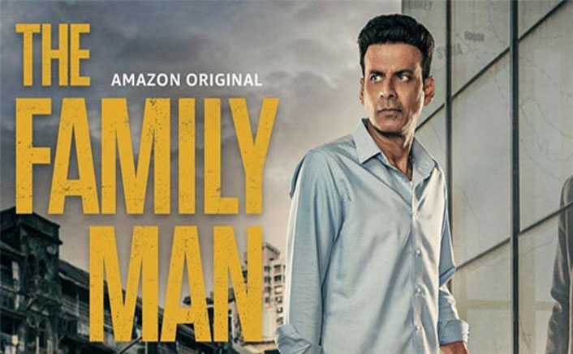

The Family Man is an Indian spy thriller streaming television series created by Raj & DK[1] for the streaming service Amazon Prime Video and features Manoj Bajpayee as Srikant Tiwari, a middle-class man secretly working as an intelligence officer for the Threat Analysis and Surveillance Cell (TASC), a fictitious branch of the National Investigation Agency.[2][3] It also stars Priyamani, Sharad Kelkar, Neeraj Madhav, Sharib Hashmi, Dalip Tahil, Sunny Hinduja and Shreya Dhanwanthary. The series is produced and directed by Raj & D.K, who also co-wrote the story and screenplay with Suman Kumar, with dialogue penned by Sumit Arora and Kumar. Samantha Ruth Prabhu was hired for the second season of the series as the main antagonist, making her foray into the digital medium[4] with Suparn S. Verma directing a section of the season. .
The series was announced in June 2018, with the filming of the first season began simultaneously in Mumbai, Delhi, Kerala, Jammu and Kashmir, Ladakh and was wrapped up within May 2019. Filming for the second season began in November 2019, and was wrapped up in September 2020.[5] The cinematography for the first season was handled by Azim Moolan and Nigam Bomzan, with Cameron Eric Bryson hired for the second season. Sumeet Kotla edited the series, while Ketan Sodha composed the background score.
The Family Man: Season 1 was showcased at the Television Critics Association's summer press tour held in Los Angeles in July 2019,[6][7] and was eventually premiered on Amazon Prime Video on 20 September 2019.[1] It received acclaim from critics and audiences, praising the performance of the cast members, and writing and execution. It eventually became the most viewed web series on Amazon Prime Video. The second season was scheduled to be aired on 12 February 2021 but was delayed, and it was finally released on 4 June 2021 and the season 3 is expected to be released in 2023.[8][9] The Family Man received eleven Filmfare OTT Awards,[10] five Asian Academy Creative Awards and two awards at the Indian Film Festival of Melbourne. A third season is in development.[11]
Shubhra Gupta from The Indian Express stated "The Manoj Bajpayee show significantly raises its stakes in the second season, casting its net wider, and manages to get in a larger context about the state of the world we are living in."[104] Tatsam Mukherjee from First Post exclaimed high praises for the season 2 stating "The Family Man S02 is a stellar continuation of a homegrown spy franchise, one that seamlessly switches between Tamil, Hindi and English."[105] Sangeetha Devi Dundoo from The Hindu wrote "The new season of 'The Family Man' is fun and absorbing, led by the ever-dependable Manoj Bajpayee and a fiery Samantha Ruth Prabhu."[106]
Rohan Naahar of the Hindustan Times wrote "Without ever parodying the genre, The Family Man succeeds at being a surprisingly funny spy series; equally capable of snappy one-liners as it is of slick thrills."[90] Karan Sanjay Shah of Rediff.com rated it four out of five and called it a "raw, engaging, well-written espionage drama that will keep you on the edge of your seat".[91] Suresh Mathew of The Quint gave it a three-and-a-half out of five and distinguished it from Sacred Games by saying, "What makers Raj and DK bring to The Family Man is a total mastery over the craft of storytelling. Unlike, say a Sacred Games, The Family Man manages to remain eminently accessible while still retaining its finesse."[92] Ektaa Malik of The Indian Express gave three out of five stars, stating "The performances by Manoj Bajpayee and Sharib Hashmi are stellar as are the dialogues."[93] Raja Sen of Mint also appreciated Bajpayee's role saying, "Bajpayee is alone reason enough to keep watching The Family Man."[94] Swetha Ramakrishnan of Firstpost gave three out of five stars and stated, "The Family Man's version of a family man is someone who can't juggle his work duties and familial duties and we're supposed to find the comedy in that."[95] Akhil Arora of NDTV wrote "On one hand, The Family Man shows itself to be very socially and politically aware but its inelegant handling of exposition, and inability to be tonally cohesive lets it down."[96] Ananya Bhattacharya of India Today wrote "Despite Manoj Bajpayee's work, The Family Man is really a dampener."[97]